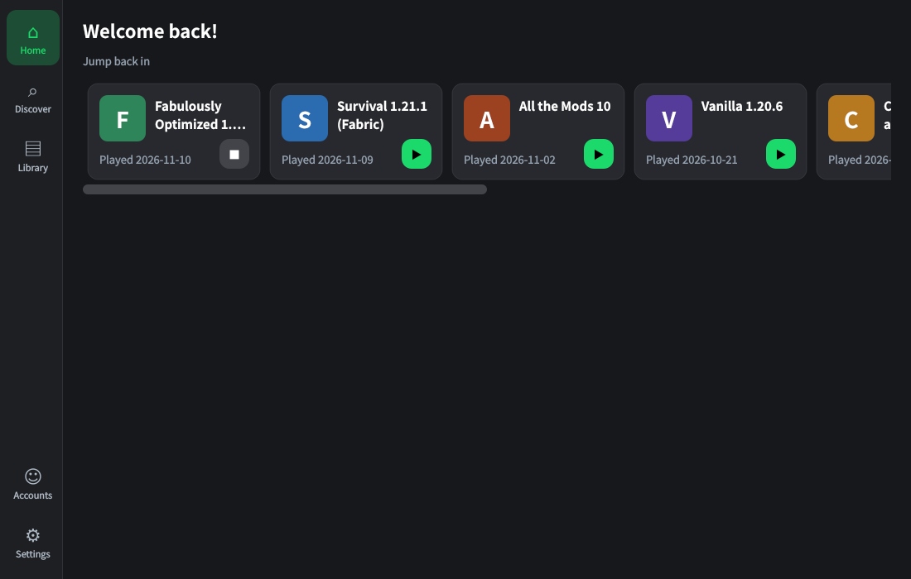
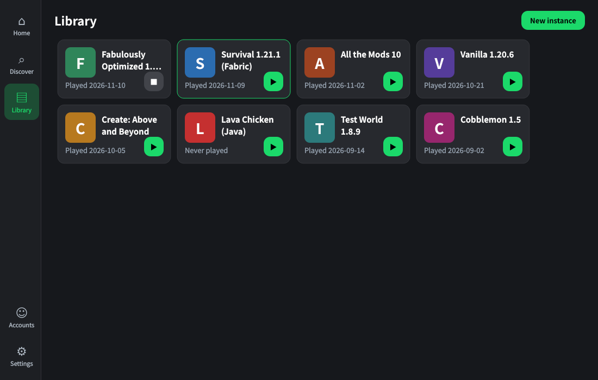
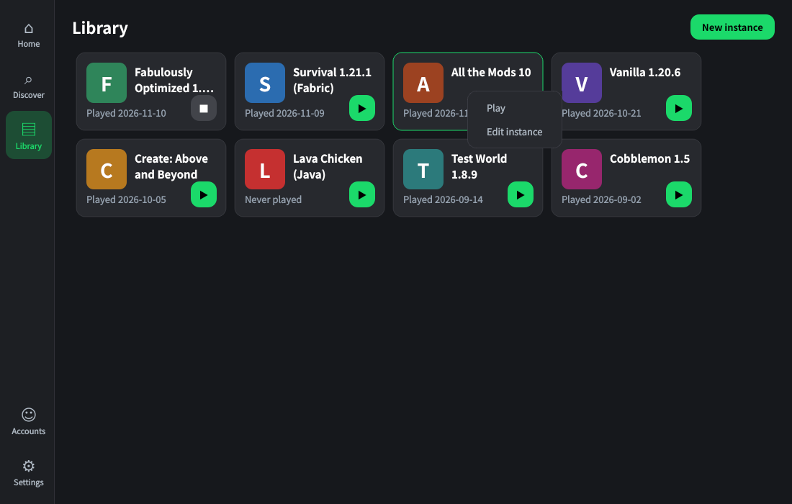
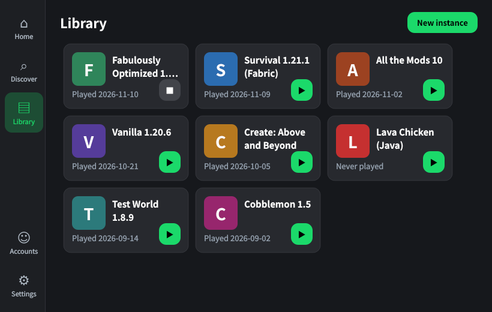

What you get
New look, familiar engine.
Modern interface
Left sidebar, instance cards with one-click play, and a Home page that puts your recent worlds first.
Prism core
Instances, Java handling, mod loaders, accounts and launching all come from Prism Launcher’s codebase.
Mods from both sides
Browse Modrinth and CurseForge in one place. Smarter cross-platform fallback is in development.
Bring your instances
First-run sync from Prism Launcher and mlcmLauncher is planned, so you don’t start from zero.
Open source
Licensed under GPL-3.0, with Prism Launcher’s original copyright notices kept intact.
Your own sign-in ID
Built with its own approved Microsoft application ID, not borrowed from another launcher.
Preview
Design previews rendered with sample instances; real screenshots will replace them.




About
Nitruran is an independent fork of Prism Launcher (GPL-3.0). Its interface follows the open-source design tokens of the Modrinth app; Modrinth’s name and logo are not used. Nitruran is not affiliated with or endorsed by Mojang, Microsoft, Prism Launcher, Modrinth or CurseForge. Minecraft is a trademark of Mojang Synergies AB.